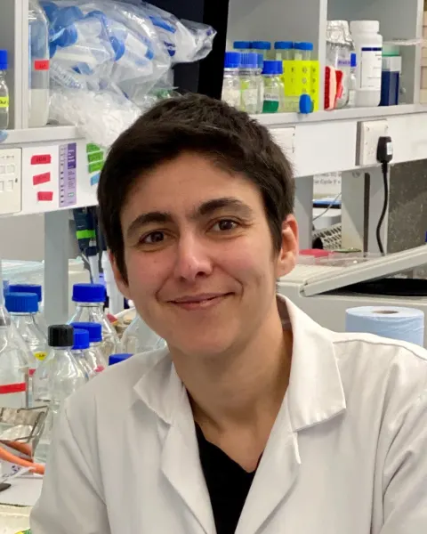

Dr Candida Nibau
Postdoctoral Research AssociateCandida is our resident lab wizard and cytology guru, with a wealth of experience in plant meiosis and molecular and cell biology. Her interests also include moss, CT scanning and crop domestication. She is investigating meiosis in our favourite allopolyploid, Arabidopsis suecica, to understand how plants with doubled genomes manage accurate chromosome segregation.